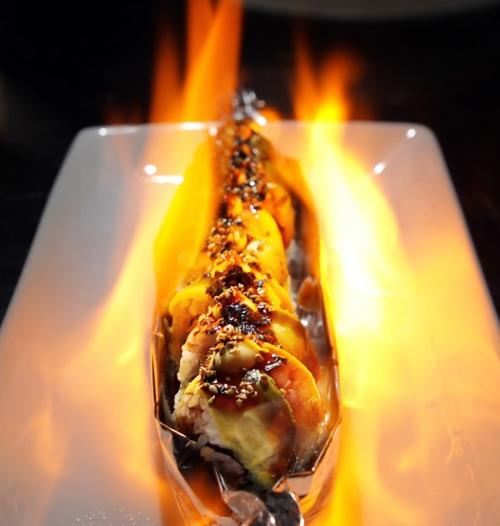

J. Gilbert's Wood-Fired Steaks and Seafood
J. Gilbert's serves Midwestern raised, USDA Prime Black Angus beef cooked over an open wood-fire grill, presented with the same inviting service and warmth. Whether you’re on the hunt for date night restaurants, somewhere to celebrate special occasions or just a great meal, J. Gilbert’s delivers a fine dining meal in a down-to-earth atmosphere.

Tani Sushi Bistro
Tani Sushi Bistro offers an extensive selection of sushi (there are currently 24 maki rolls on the menu) for lunch and dinner in Clayton. Dining here is an artistic experience, the tone set by a unique display of original Asian art curated by Heejeong Jung.
801 Fish
801 Fish offers only globally sourced finned fish and crustaceans from the world's most pristine waters. You'll find chef driven cuisine coupled with exemplary service in a sophisticated and modern aquatic atmosphere at the Clayton restaurant across the street from its sister, 801 Chophouse.